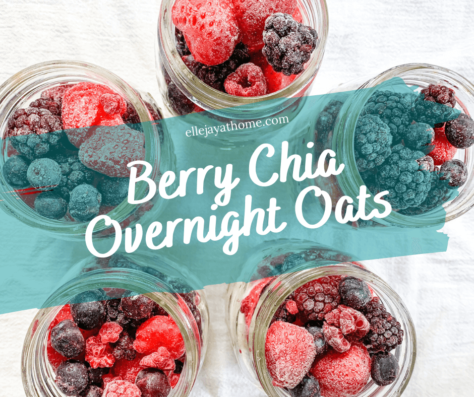

Berry Chia Overnight Oats
Loaded with antioxidants, fiber, and plant protein, these overnight oats are a quick and nutritious breakfast option.
Modern, Healthy, Delicious Food Inspiration
Loaded with antioxidants, fiber, and plant protein, these overnight oats are a quick and nutritious breakfast option.

Colorful vegetables, quinoa, and a lemon tahini dressing combine for a vibrant, healthy meal.

Drinking enough water helps regulate body temperature, improves mood, and boosts energy levels.
Learn to use veggie scraps for broths, compost leftovers, and organize your fridge to cut down on food waste.
Fresh basil elevates pasta, salads, and even desserts with its aromatic flavor. Grow it easily on your kitchen windowsill.